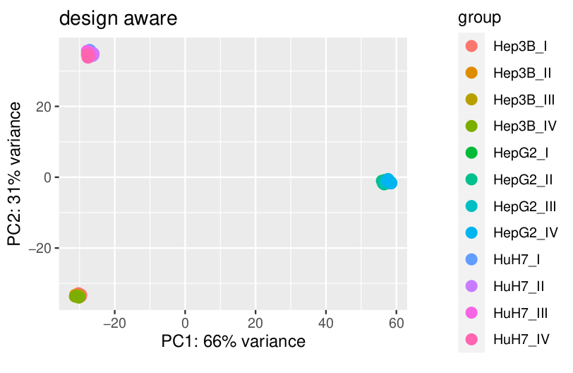
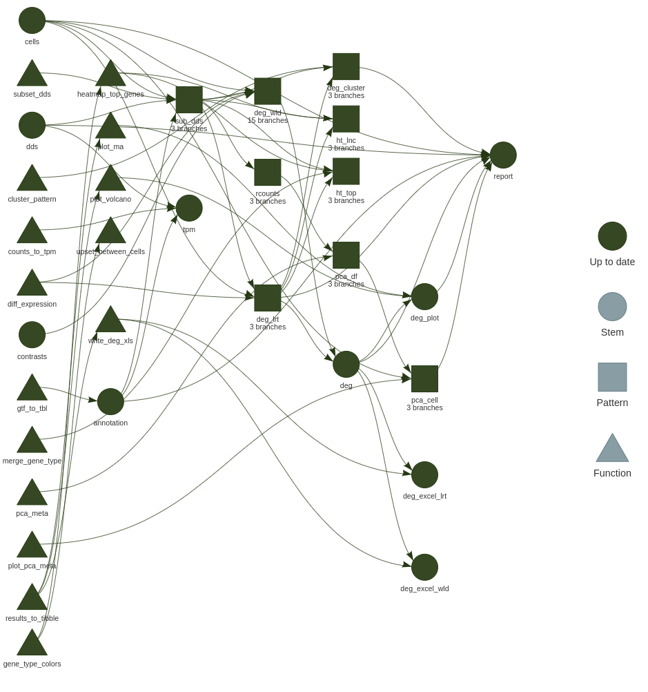

class: title-slide <div> <style type="text/css">.xaringan-extra-logo { width: 110px; height: 60px; z-index: 0; background-image: url(img/logo_hpc-shool2021.png); background-size: contain; background-repeat: no-repeat; position: absolute; bottom:1em;left:1em; } </style> <script>(function () { let tries = 0 function addLogo () { if (typeof slideshow === 'undefined') { tries += 1 if (tries < 10) { setTimeout(addLogo, 100) } } else { document.querySelectorAll('.remark-slide-content:not(.title-slide):not(.inverse):not(.hide_logo)') .forEach(function (slide) { const logo = document.createElement('a') logo.classList = 'xaringan-extra-logo' logo.href = 'https://ulhpc-tutorials.readthedocs.io/en/latest/' slide.appendChild(logo) }) } } document.addEventListener('DOMContentLoaded', addLogo) })()</script> </div> <style>.xe__progress-bar__container { top:0; opacity: 1; position:absolute; right:0; left: 0; } .xe__progress-bar { height: 0.25em; background-color: #00A4E1; width: calc(var(--slide-current) / var(--slide-total) * 100%); } .remark-visible .xe__progress-bar { animation: xe__progress-bar__wipe 200ms forwards; animation-timing-function: cubic-bezier(.86,0,.07,1); } @keyframes xe__progress-bar__wipe { 0% { width: calc(var(--slide-previous) / var(--slide-total) * 100%); } 100% { width: calc(var(--slide-current) / var(--slide-total) * 100%); } }</style> # Reproducible pipelines in R ## with `targets` .center[<img src="img/logo_targets.png" width="100px"/>] ## HPC SChool 2021 PS11: R session ### A. Ginolhac ### DLSM University of Luxembourg <img src="https://raw.githubusercontent.com/ULHPC/documents/master/roll-ups/ULHPC-RollUp.png" style="height:550px;position: absolute;bottom: 1em;left: 1em;"/> --- ## Introduction to R .Large[Not the scope of this session] .pull-left[ .Large[.bold[Beginner] user, check out [this lecture](https://rworkshop.uni.lu/lectures/lecture01_intro.html#10)]  ] .pull-right[ .Large[.bold[Advanced] user, interested in programming, check out [this lecture](https://rworkshop.uni.lu/lectures/lecture12_tidyeval.html)]  ] --- class: middle, center, inverse # targets ## a Make-like workflow manager for <svg aria-hidden="true" role="img" viewBox="0 0 581 512" style="height:30px;width:34.04px;vertical-align:-0.125em;margin-left:auto;margin-right:auto;font-size:inherit;fill:currentColor;overflow:visible;position:relative;"><path d="M581 226.6C581 119.1 450.9 32 290.5 32S0 119.1 0 226.6C0 322.4 103.3 402 239.4 418.1V480h99.1v-61.5c24.3-2.7 47.6-7.4 69.4-13.9L448 480h112l-67.4-113.7c54.5-35.4 88.4-84.9 88.4-139.7zm-466.8 14.5c0-73.5 98.9-133 220.8-133s211.9 40.7 211.9 133c0 50.1-26.5 85-70.3 106.4-2.4-1.6-4.7-2.9-6.4-3.7-10.2-5.2-27.8-10.5-27.8-10.5s86.6-6.4 86.6-92.7-90.6-87.9-90.6-87.9h-199V361c-74.1-21.5-125.2-67.1-125.2-119.9zm225.1 38.3v-55.6c57.8 0 87.8-6.8 87.8 27.3 0 36.5-38.2 28.3-87.8 28.3zm-.9 72.5H365c10.8 0 18.9 11.7 24 19.2-16.1 1.9-33 2.8-50.6 2.9v-22.1z"/></svg> <img src="https://docs.ropensci.org/targets/reference/figures/logo.png" style="height:150px"/> <img src="https://docs.ropensci.org/tarchetypes/reference/figures/logo.png" style="height:150px"/> --- # targets and companion package tarchetypes <img src="https://docs.ropensci.org/targets/reference/figures/logo.png" style="height:150px;position: absolute;top: 1em;right: 1em;"/> <img src="https://docs.ropensci.org/tarchetypes/reference/figures/logo.png" style="height:150px;position: absolute;top: 10em;right: 1em;"/> .flex.items-center[ .w-10[ ] .w-70.bg-washed-green.b--green.ba.bw2.br3.shadow-5.ph3.mt3.mr1[ .large[.bbox[A workflow manager for R]] .large[ - Saving you time and stress - Understand how it is implemented in `targets` + Define your `targets` + Connect `targets` to create the **dependencies** <svg aria-hidden="true" role="img" viewBox="0 0 640 512" style="height:1em;width:1.25em;vertical-align:-0.125em;margin-left:auto;margin-right:auto;font-size:inherit;fill:currentColor;overflow:visible;position:relative;"><path d="M384 320H256c-17.67 0-32 14.33-32 32v128c0 17.67 14.33 32 32 32h128c17.67 0 32-14.33 32-32V352c0-17.67-14.33-32-32-32zM192 32c0-17.67-14.33-32-32-32H32C14.33 0 0 14.33 0 32v128c0 17.67 14.33 32 32 32h95.72l73.16 128.04C211.98 300.98 232.4 288 256 288h.28L192 175.51V128h224V64H192V32zM608 0H480c-17.67 0-32 14.33-32 32v128c0 17.67 14.33 32 32 32h128c17.67 0 32-14.33 32-32V32c0-17.67-14.33-32-32-32z"/></svg> + Check **dependencies** with `visnetwork` + Embrace **dynamic** branching <svg aria-hidden="true" role="img" viewBox="0 0 384 512" style="height:1em;width:0.75em;vertical-align:-0.125em;margin-left:auto;margin-right:auto;font-size:inherit;fill:currentColor;overflow:visible;position:relative;"><path d="M384 144c0-44.2-35.8-80-80-80s-80 35.8-80 80c0 36.4 24.3 67.1 57.5 76.8-.6 16.1-4.2 28.5-11 36.9-15.4 19.2-49.3 22.4-85.2 25.7-28.2 2.6-57.4 5.4-81.3 16.9v-144c32.5-10.2 56-40.5 56-76.3 0-44.2-35.8-80-80-80S0 35.8 0 80c0 35.8 23.5 66.1 56 76.3v199.3C23.5 365.9 0 396.2 0 432c0 44.2 35.8 80 80 80s80-35.8 80-80c0-34-21.2-63.1-51.2-74.6 3.1-5.2 7.8-9.8 14.9-13.4 16.2-8.2 40.4-10.4 66.1-12.8 42.2-3.9 90-8.4 118.2-43.4 14-17.4 21.1-39.8 21.6-67.9 31.6-10.8 54.4-40.7 54.4-75.9zM80 64c8.8 0 16 7.2 16 16s-7.2 16-16 16-16-7.2-16-16 7.2-16 16-16zm0 384c-8.8 0-16-7.2-16-16s7.2-16 16-16 16 7.2 16 16-7.2 16-16 16zm224-320c8.8 0 16 7.2 16 16s-7.2 16-16 16-16-7.2-16-16 7.2-16 16-16z"/></svg> + Run **only** what needs to be executed + Bundle **dependencies** in a Rmarkdown document with [`tar_render()`](https://wlandau.github.io/tarchetypes/reference/tar_render.html) + Increase reproducibility with the package manager [`renv`](https://rstudio.github.io/renv/articles/renv.html) - Example with RNA-seq data from .bold[Wendkouni Nadège MINOUNGOU] ]]] --- # Folder structure <img src="https://raw.githubusercontent.com/rstudio/renv/master/man/figures/logo.svg" style="height:160px;position: absolute;top: 1em;right: 1em;"/> <img src="https://camo.githubusercontent.com/f10a96951d85f43abc67d46bafd97d302deb9daf8490082fe339b9292c75072a/68747470733a2f2f626f6f6b646f776e2e6f72672f79696875692f726d61726b646f776e2f696d616765732f6865782d726d61726b646f776e2e706e67" style="height:150px;position: absolute;top: 10em;right: 1.6em;"/> <img src="https://upload.wikimedia.org/wikipedia/commons/thumb/d/d0/RStudio_logo_flat.svg/1200px-RStudio_logo_flat.svg.png" style="height:70px;position: absolute;top: 18em;right: 1em;"/> <img src="https://git-scm.com/images/logos/logomark-black@2x.png" style="height:120px;position: absolute;top: 22em;right: 2em;"/> .left-column[ ```r ├── .git/ *├── _targets.R ├── _targets/ ├── Repro.Rproj ├── R *│ ├── functions.R *│ └── utils.R ├── run.R* ├── renv/ ├── renv.lock └── report.Rmd ``` ] .right-column[ .large[ - With [`renv`](https://rstudio.github.io/renv/). Snapshot your package environment (and restore! 😌) - `_targets.R` is the only mandatory file - Use a `R` sub-folder for functions, gets closer to a <svg aria-hidden="true" role="img" viewBox="0 0 581 512" style="height:1em;width:1.13em;vertical-align:-0.125em;margin-left:auto;margin-right:auto;font-size:inherit;fill:currentColor;overflow:visible;position:relative;"><path d="M581 226.6C581 119.1 450.9 32 290.5 32S0 119.1 0 226.6C0 322.4 103.3 402 239.4 418.1V480h99.1v-61.5c24.3-2.7 47.6-7.4 69.4-13.9L448 480h112l-67.4-113.7c54.5-35.4 88.4-84.9 88.4-139.7zm-466.8 14.5c0-73.5 98.9-133 220.8-133s211.9 40.7 211.9 133c0 50.1-26.5 85-70.3 106.4-2.4-1.6-4.7-2.9-6.4-3.7-10.2-5.2-27.8-10.5-27.8-10.5s86.6-6.4 86.6-92.7-90.6-87.9-90.6-87.9h-199V361c-74.1-21.5-125.2-67.1-125.2-119.9zm225.1 38.3v-55.6c57.8 0 87.8-6.8 87.8 27.3 0 36.5-38.2 28.3-87.8 28.3zm-.9 72.5H365c10.8 0 18.9 11.7 24 19.2-16.1 1.9-33 2.8-50.6 2.9v-22.1z"/></svg> package - In a RStudio project - Version tracked with <svg aria-hidden="true" role="img" viewBox="0 0 448 512" style="height:1em;width:0.88em;vertical-align:-0.125em;margin-left:auto;margin-right:auto;font-size:inherit;fill:currentColor;overflow:visible;position:relative;"><path d="M100.59 334.24c48.57 3.31 58.95 2.11 58.95 11.94 0 20-65.55 20.06-65.55 1.52.01-5.09 3.29-9.4 6.6-13.46zm27.95-116.64c-32.29 0-33.75 44.47-.75 44.47 32.51 0 31.71-44.47.75-44.47zM448 80v352a48 48 0 0 1-48 48H48a48 48 0 0 1-48-48V80a48 48 0 0 1 48-48h352a48 48 0 0 1 48 48zm-227 69.31c0 14.49 8.38 22.88 22.86 22.88 14.74 0 23.13-8.39 23.13-22.88S258.62 127 243.88 127c-14.48 0-22.88 7.84-22.88 22.31zM199.18 195h-49.55c-25-6.55-81.56-4.85-81.56 46.75 0 18.8 9.4 32 21.85 38.11C74.23 294.23 66.8 301 66.8 310.6c0 6.87 2.79 13.22 11.18 16.76-8.9 8.4-14 14.48-14 25.92C64 373.35 81.53 385 127.52 385c44.22 0 69.87-16.51 69.87-45.73 0-36.67-28.23-35.32-94.77-39.38l8.38-13.43c17 4.74 74.19 6.23 74.19-42.43 0-11.69-4.83-19.82-9.4-25.67l23.38-1.78zm84.34 109.84l-13-1.78c-3.82-.51-4.07-1-4.07-5.09V192.52h-52.6l-2.79 20.57c15.75 5.55 17 4.86 17 10.17V298c0 5.62-.31 4.58-17 6.87v20.06h72.42zM384 315l-6.87-22.37c-40.93 15.37-37.85-12.41-37.85-16.73v-60.72h37.85v-25.41h-35.82c-2.87 0-2 2.52-2-38.63h-24.18c-2.79 27.7-11.68 38.88-34 41.42v22.62c20.47 0 19.82-.85 19.82 2.54v66.57c0 28.72 11.43 40.91 41.67 40.91 14.45 0 30.45-4.83 41.38-10.2z"/></svg> - `Rmarkdown` file allows to gather results in a report - Optional: an executable `run.sh` allows to use Build Tools in RStudio .Large[Targets Markdown] .large[ Bundle `globals` and `pipeline` inside a **Rmarkdown** document. - Makes development easier - Documentation can be embedded - `targets` engine recognizes by `knitr` and takes care of writing all <svg aria-hidden="true" role="img" viewBox="0 0 581 512" style="height:1em;width:1.13em;vertical-align:-0.125em;margin-left:auto;margin-right:auto;font-size:inherit;fill:currentColor;overflow:visible;position:relative;"><path d="M581 226.6C581 119.1 450.9 32 290.5 32S0 119.1 0 226.6C0 322.4 103.3 402 239.4 418.1V480h99.1v-61.5c24.3-2.7 47.6-7.4 69.4-13.9L448 480h112l-67.4-113.7c54.5-35.4 88.4-84.9 88.4-139.7zm-466.8 14.5c0-73.5 98.9-133 220.8-133s211.9 40.7 211.9 133c0 50.1-26.5 85-70.3 106.4-2.4-1.6-4.7-2.9-6.4-3.7-10.2-5.2-27.8-10.5-27.8-10.5s86.6-6.4 86.6-92.7-90.6-87.9-90.6-87.9h-199V361c-74.1-21.5-125.2-67.1-125.2-119.9zm225.1 38.3v-55.6c57.8 0 87.8-6.8 87.8 27.3 0 36.5-38.2 28.3-87.8 28.3zm-.9 72.5H365c10.8 0 18.9 11.7 24 19.2-16.1 1.9-33 2.8-50.6 2.9v-22.1z"/></svg> scripts ] ] ] --- # `renv` features <img src="https://raw.githubusercontent.com/rstudio/renv/master/man/figures/logo.svg" style="height:140px;position: absolute;top: 1em;right: 1em;"/> .pull-left[ - `hydrate()` parses your code and finds library calls - `install()` from .bold[CRAN] with dependencies (also from <svg aria-hidden="true" role="img" viewBox="0 0 496 512" style="height:1em;width:0.97em;vertical-align:-0.125em;margin-left:auto;margin-right:auto;font-size:inherit;fill:orange;overflow:visible;position:relative;"><path d="M165.9 397.4c0 2-2.3 3.6-5.2 3.6-3.3.3-5.6-1.3-5.6-3.6 0-2 2.3-3.6 5.2-3.6 3-.3 5.6 1.3 5.6 3.6zm-31.1-4.5c-.7 2 1.3 4.3 4.3 4.9 2.6 1 5.6 0 6.2-2s-1.3-4.3-4.3-5.2c-2.6-.7-5.5.3-6.2 2.3zm44.2-1.7c-2.9.7-4.9 2.6-4.6 4.9.3 2 2.9 3.3 5.9 2.6 2.9-.7 4.9-2.6 4.6-4.6-.3-1.9-3-3.2-5.9-2.9zM244.8 8C106.1 8 0 113.3 0 252c0 110.9 69.8 205.8 169.5 239.2 12.8 2.3 17.3-5.6 17.3-12.1 0-6.2-.3-40.4-.3-61.4 0 0-70 15-84.7-29.8 0 0-11.4-29.1-27.8-36.6 0 0-22.9-15.7 1.6-15.4 0 0 24.9 2 38.6 25.8 21.9 38.6 58.6 27.5 72.9 20.9 2.3-16 8.8-27.1 16-33.7-55.9-6.2-112.3-14.3-112.3-110.5 0-27.5 7.6-41.3 23.6-58.9-2.6-6.5-11.1-33.3 2.6-67.9 20.9-6.5 69 27 69 27 20-5.6 41.5-8.5 62.8-8.5s42.8 2.9 62.8 8.5c0 0 48.1-33.6 69-27 13.7 34.7 5.2 61.4 2.6 67.9 16 17.7 25.8 31.5 25.8 58.9 0 96.5-58.9 104.2-114.8 110.5 9.2 7.9 17 22.9 17 46.4 0 33.7-.3 75.4-.3 83.6 0 6.5 4.6 14.4 17.3 12.1C428.2 457.8 496 362.9 496 252 496 113.3 383.5 8 244.8 8zM97.2 352.9c-1.3 1-1 3.3.7 5.2 1.6 1.6 3.9 2.3 5.2 1 1.3-1 1-3.3-.7-5.2-1.6-1.6-3.9-2.3-5.2-1zm-10.8-8.1c-.7 1.3.3 2.9 2.3 3.9 1.6 1 3.6.7 4.3-.7.7-1.3-.3-2.9-2.3-3.9-2-.6-3.6-.3-4.3.7zm32.4 35.6c-1.6 1.3-1 4.3 1.3 6.2 2.3 2.3 5.2 2.6 6.5 1 1.3-1.3.7-4.3-1.3-6.2-2.2-2.3-5.2-2.6-6.5-1zm-11.4-14.7c-1.6 1-1.6 3.6 0 5.9 1.6 2.3 4.3 3.3 5.6 2.3 1.6-1.3 1.6-3.9 0-6.2-1.4-2.3-4-3.3-5.6-2z"/></svg>) - `snapshot()` registers changes, hashes and origin - `restore()` to a certain point in time ```r > renv::snapshot() The following package(s) will be updated in the lockfile: # CRAN =============================== - RcppParallel [5.0.2 -> 5.0.3] - cli [2.3.0 -> 2.3.1] - pkgload [1.1.0 -> 1.2.0] - tint [0.1.3 -> *] # GitHub ============================= - targets [ropensci/targets@main: 598d7a23 -> bdc1b29c] Do you want to proceed? [y/N]: ``` ] -- .pull-right[ `renv.lock` file after a `snapshot` ``` "R": { "Version": "4.0.3", "Repositories": [ { "Name": "CRAN", "URL": "https://cloud.r-project.org" } ] }, "Bioconductor": { "Version": "3.12" }, "Packages": { "AnnotationDbi": { "Package": "AnnotationDbi", "Version": "1.52.0", "Source": "Bioconductor", "Hash": "ca5106b296b3aa6af713ce197be547c1" }, "BH": { "Package": "BH", "Version": "1.75.0-0", "Source": "Repository", "Repository": "CRAN", "Hash": "e4c04affc2cac20c8fec18385cd14691" }, "targets": { "Package": "targets", "Version": "0.1.0.9000", "Source": "GitHub", "RemoteType": "github", "RemoteUsername": "ropensci", "RemoteRepo": "targets", "RemoteRef": "main", "RemoteSha": "598d7a23661d4c760209c7991bf10584eadcf7c8", "RemoteHost": "api.github.com", "Hash": "ee66061fd5c757ec600071965d457818" }, [...] ``` ] --- #Example with RNA-seq data across 3 cell lines ### PCA shows that differences between cells .bold.red[`>>`] biological effect (roman numbers)  -- ### Solution: Split counts and metadata for each cell .Large[Do we copy code 3 times?] --- # Define targets = explicit dependencies <img src="https://docs.ropensci.org/targets/reference/figures/logo.png" style="height:120px;position: absolute;top: 1em;right: 1em;"/> .pull-left[ ### `_targets.R`, define 4 targets Last `target` depends on the **3** upstreams ```r library(targets) source("R/functions.R") source("R/plotting.R") list( * tar_target(cells, c("HepG2", "HuH7", "Hep3B")), * tar_qs(dds, read_rds(here::here("data", "all.rds")), packages = "DESeq2"), * tar_fst_tbl(annotation, gtf_to_tbl(here::here("data", "gencode.v36.annotation.gtf")), packages = c("tibble", "rtracklayer")), * tar_qs(sub_dds, subset_dds(dds, filter(annotation, type == "gene"), .cell = cells), pattern = map(cells), # dynamic branching packages = c("DESeq2", "tidyverse")) [...] ) ``` ] -- .pull-right[ .bold[Dynamic branching] makes dependencies easier to read. .large[ > .orange.bold[Of course, someone has to write for loops, it doesn't have to be you] .tr[ — _.bold[Jenny Bryan]_]]  ] .footnote[Figure from `tar_visnetwork()`] --- class: hide_logo # Running targets <img src="https://docs.ropensci.org/targets/reference/figures/logo.png" style="height:120px;position: absolute;top: 1em;right: 1em;"/> .pull-left[ ``` ● run target annotation ● run target cells ● run target dds ● run branch sub_dds_3078b1e0 condition time_h HepG2_I1 control 0 HepG2_I2 HIL6 2 using pre-existing size factors estimating dispersions gene-wise dispersion estimates: 2 workers mean-dispersion relationship final dispersion estimates, fitting model and testing: 2 workers ● run branch sub_dds_d05c5da7 condition time_h HuH7_I1 control 0 HuH7_I2 HIL6 2 using pre-existing size factors estimating dispersions gene-wise dispersion estimates: 2 workers mean-dispersion relationship final dispersion estimates, fitting model and testing: 2 workers ● run branch sub_dds_c60d7096 condition time_h Hep3B_I1 control 0 Hep3B_I2 HIL6 2 using pre-existing size factors estimating dispersions gene-wise dispersion estimates: 2 workers mean-dispersion relationship final dispersion estimates, fitting model and testing: 2 workers ● end pipeline ``` ] -- .pull-right[ .Large[Options to display time and object sizes]  ] --- # Re-running <img src="https://docs.ropensci.org/targets/reference/figures/logo.png" style="height:120px;position: absolute;top: 1em;right: 1em;"/> .pull-left[ ``` ✓ skip target annotation ✓ skip target cells ✓ skip target dds ✓ skip branch sub_dds_3078b1e0 ✓ skip branch sub_dds_d05c5da7 ✓ skip branch sub_dds_c60d7096 ✓ skip pipeline ``` .Large[All good, nothing to be done ✔️. Actually `targets` tracks all objects and so functions A more complete dependency graph shows .bold[functions] ] ] -- .pull-right[  .Large[Let's add the PCA per cell type now] ] --- class: hide_logo # PCA, add 4 targets <img src="https://docs.ropensci.org/targets/reference/figures/logo.png" style="height:120px;position: absolute;top: 1em;right: 1em;"/> .pull-left[ ### Smaller targets avoid unnecessary re-running steps ```r [...] tar_target(rcounts, vst(sub_dds, blind = TRUE), pattern = map(sub_dds), packages = c("DESeq2")), tar_target(pca_df, pca_meta(rcounts), pattern = map(rcounts), packages = c("DESeq2", "tidyr", "dplyr")), tar_target(pca_cell, tibble(cell = cells, pca = list(plot_pca_meta(pca_df))), pattern = map(cells, pca_df), packages = c("ggplot2", "tibble")) [...] ``` .large[ .bold[Translate into]: - For every cell data, compute regularized counts (`vst`: variance stabilization) - For every regularized counts, compute PCA (`df`: data.frame, _i. e_ a table) - For every cell names / PCA tables, plot PCA in a table for easier labeling ] ] -- .pull-right[  ] --- # PCA results .flex[ .w-33.b--green.ba.bw2.br3.shadow-5.ph4.mt2.mr2[ ### Running <video width="310" height="340"> <source src="https://biostat2.uni.lu/practicals/data/targets_pca.mp4" type="video/mp4"> </video> ] .w-33.b--green.ba.bw2.br3.shadow-5.ph4.mt2.mr2[ ### Awesome feature: load results IN a Rmarkdown document .green.bold[Separate] `code` from content  ] .w-33.b--green.ba.bw2.br3.shadow-5.ph4.mt2[ ### How to display a plot  ]] --- # The full picture ### Adding step by step ### desired analyses #### Whole analysis takes 24 minutes and 4.54 seconds .large[ > .orange.bold[Of course, someone has to</br>remember the dependencies, </br>it doesn't have to be you] .tl[ — _could be William Landau via .bold[Jenny Bryan]_]] <img src="https://docs.ropensci.org/targets/reference/figures/logo.png" style="height:120px;position: absolute;top: 1em;right: 1em;"/>  --- # Is it worth the effort? -- .left-column[ .huge.bold.green[Yes] .Large[ #### For you - Autonomy - Skills - _Free_ time - Confidence over results - Reproducibility - Fun 🥳 ] ] -- .right-column[ ### Better project design .Large[Thinking at what is a [good `targets`](https://books.ropensci.org/targets/targets.html#what-a-target-should-do) helps tremendously the coding] >1. Are large enough to subtract a decent amount of runtime when skipped. 2. Are small enough that some targets can be skipped even if others need to run. 3. Invoke no side effects (tar_target(format = "file") can save files.) 4.Return a single value that is + Easy to understand and introspect. + Meaningful to the project [...] .tr[.bold[William Landau]] ### Reproducibility .bold[Both] thanks to .bold[`targets`] and `renv` via `git` ```r > renv::history() commit author_date committer_date subject 1e8dd2278 2021-02-23 15:29:57 2021-02-23 15:29:57 reformat creating config files 24c1222db 2021-02-15 17:07:01 2021-02-15 17:07:01 highlight gene type in the DEG patterns 326c8a726 2021-02-04 16:16:38 2021-02-04 16:16:38 cluster LRT genes by they dynamic patterns 4c6791796 2021-01-26 13:08:15 2021-01-26 13:08:15 gene types in upset plots for lengths 5865ee70b 2021-01-21 16:36:48 2021-01-21 16:37:08 add upset plots [...] ``` ] --- # Scalability and parallelization <img src="https://future.futureverse.org/reference/figures/logo.png" style="height:120px;position: absolute;top: 1em;right: 1em;"/> .pull-left[ .large[ - Scale-up with .bold[dynamic] branching - Parallelization on .bold[HPC] using: + `tar_make_clustermq(workers = 3L)` ([`clustermq`](https://mschubert.github.io/clustermq/articles/userguide.html#configuration) by **Michael Schubert**) + `tar_make_future(workers = 3L)` ([`future`](https://future.futureverse.org/) by **Henrik Bengtsson**) - [.bold[Cloud]](https://books.ropensci.org/targets/cloud.html) computing in .bold[AWS] is also available - [.bold[Static] branching](https://books.ropensci.org/targets/static.html#when-to-use-static-branching) to get explicit branch names. ] ] .pull-right[ </br></br>  .footnote[Source: .bold[William Landau]: talk at [Bayes Lund](https://wlandau.github.io/bayes-lund-2021/#8)] ] --- # Reports as Rmarkdown documents <img src="https://github.com/wlandau.png" style="height:150px;position: absolute;top: 1em;right: 1em;"/> .left-column[ `targets`, written by [William Landau](https://wlandau.github.io/) (pictured), is flexible, robust and still allows for a customized report. All computing is done only when needed, and code is away from writing content. Pipelines can now also be a **Rmd**! Once `knitted` the report can be sent to the inquirer. ] ### Targets Markdown New in `targets` > **0.6**. Instructions at [William bookdown](https://books.ropensci.org/targets/markdown.html) Test it as the Rmd template (and excellent [video](https://www.youtube.com/watch?v=FODSavXGjYg) from R Lille meetup by **Landau**): .center[] --- # Bonus: watch the pipeline running live 🍿 <img src="https://docs.ropensci.org/targets/reference/figures/logo.png" style="height:120px;position: absolute;top: 1em;right: 1em;"/> <img src="https://raw.githubusercontent.com/rstudio/shiny/master/man/figures/logo.png" style="height:120px;position: absolute;top: 1em;right: 7em;"/> .left-column[ - `targets` events watched live 🎞 - Here, after changing a threshold in the LRT step - `branches` can be monitored too - 2 videos joined as I fixed an .red.bold[error] at 1'42" - Option to display functions (unset here) ] .right-column[ ### `tar_watch()` shiny app from `targets` <video> <source src="https://biostat2.uni.lu/practicals/data/tar_watch.mp4" type="video/mp4"> </video> ] --- # Before we stop .flex[ .w-50.bg-washed-green.b--green.ba.bw2.br3.shadow-5.ph3.mt1.mr1[ .large[.gbox[Highlights] * `targets`: a Makefile-like approach for project design + dependencies manager + re-run only what's needed ]] .w-50.bg-washed-green.b--green.ba.bw2.br3.shadow-5.ph3.mt1.ml1[ .large[.bbox[Acknowledgments 🙏 👏] * **Eric Koncina** early adopter of `targets` * **Wendkouni N. Minoungou** for the RNA-seq data * [**William Landau**](https://github.com/wlandau) main developer of `targets` * [Xie Yihui](https://github.com/yihui) and [Garrick Aden-Buie](https://github.com/gadenbuie) for [`xarigan`](https://github.com/yihui/xaringan)/[`xaringanExtra`](https://github.com/gadenbuie/xaringanExtra) * [Jennifer Bryan](https://github.com/jennybc) ] ]] .flex[ .w-50.bg-washed-green.b--green.ba.bw2.br3.shadow-5.ph3.mt1.mr1[ .large[.ybox[Further reading <svg aria-hidden="true" role="img" viewBox="0 0 448 512" style="height:1em;width:0.88em;vertical-align:-0.125em;margin-left:auto;margin-right:auto;font-size:inherit;fill:currentColor;overflow:visible;position:relative;"><path d="M448 360V24c0-13.3-10.7-24-24-24H96C43 0 0 43 0 96v320c0 53 43 96 96 96h328c13.3 0 24-10.7 24-24v-16c0-7.5-3.5-14.3-8.9-18.7-4.2-15.4-4.2-59.3 0-74.7 5.4-4.3 8.9-11.1 8.9-18.6zM128 134c0-3.3 2.7-6 6-6h212c3.3 0 6 2.7 6 6v20c0 3.3-2.7 6-6 6H134c-3.3 0-6-2.7-6-6v-20zm0 64c0-3.3 2.7-6 6-6h212c3.3 0 6 2.7 6 6v20c0 3.3-2.7 6-6 6H134c-3.3 0-6-2.7-6-6v-20zm253.4 250H96c-17.7 0-32-14.3-32-32 0-17.6 14.4-32 32-32h285.4c-1.9 17.1-1.9 46.9 0 64z"/></svg>]] - [Main website](https://docs.ropensci.org/targets/) - [Targetopia](https://wlandau.github.io/targetopia/) **Landau** universe of targets-derived - [Video](https://www.youtube.com/watch?v=FODSavXGjYg) from R Lille meetup by **William Landau**. June 2021 45'' - [Video](https://www.youtube.com/watch?v=odcBA4ETLn8) from Bayes Lund by **William Landau**. October 2021 - [Documentation](https://books.ropensci.org/targets/) as bookdown by **Landau** ] .w-50.pv2.ph3.mt2.ml1[ .huge[.bbox[Thank you for your attention!]] ]]